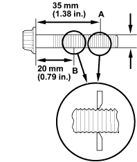
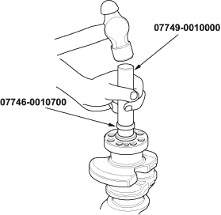

- Measure the diameter of each connecting rod bolt at point A and point B.

- Calculate the difference in diameter between point A and point B.
Point A - Point B = Difference in Diameter
Difference in Diameter:
Specification:
0 - 0.1 mm (0 - 0.004 in.)
- If the difference in diameter is out of tolerance, replace the connecting rod bolt.

Special Tools Required
- Handle driver, 07749-0010000
- Driver attachment, 24 x 26 mm, 07746-0010700
- Oil seal driver attachment, 96 07ZAD-PNA0100
- Install the crankshaft end bushing when replacing the crankshaft.
- Using the special tools, drive in the crankshaft end bushing until the special tools bottom against the crankshaft.

- Check the connecting rod bearing clearance with plastigage (see page 7-9).
- Check the main bearing clearance with plastigage (see page 7-7).
- Inspect the connecting rod bolts (see page 7-25).